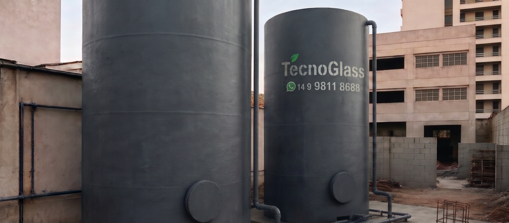
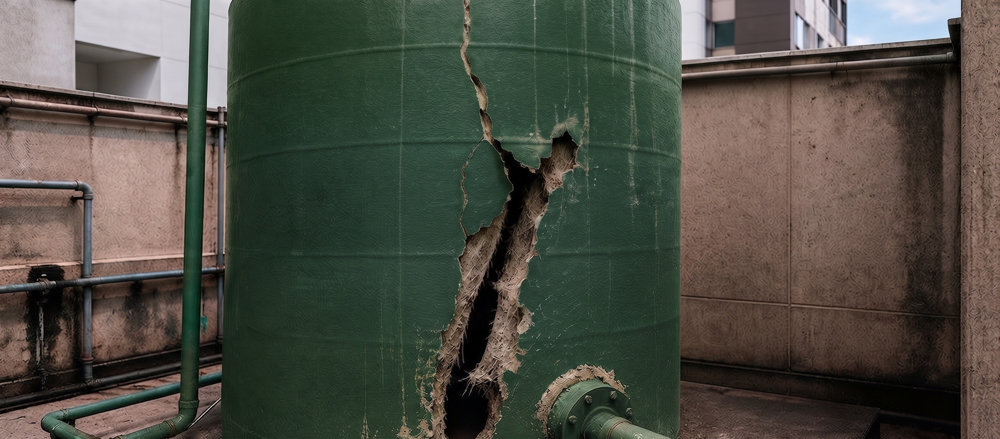
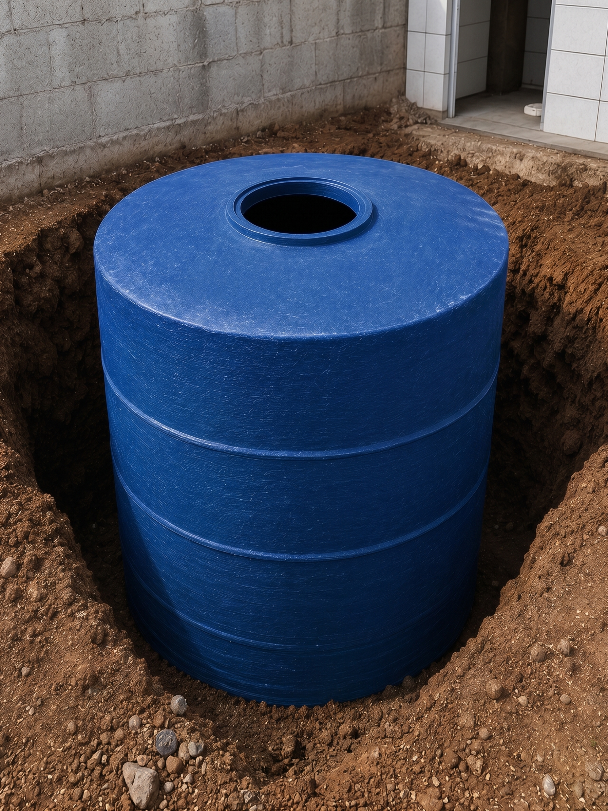
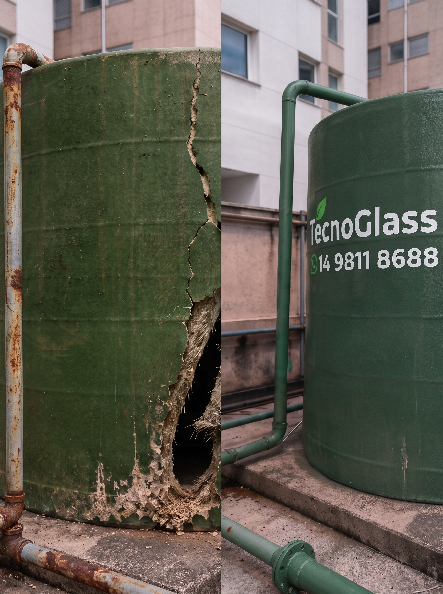
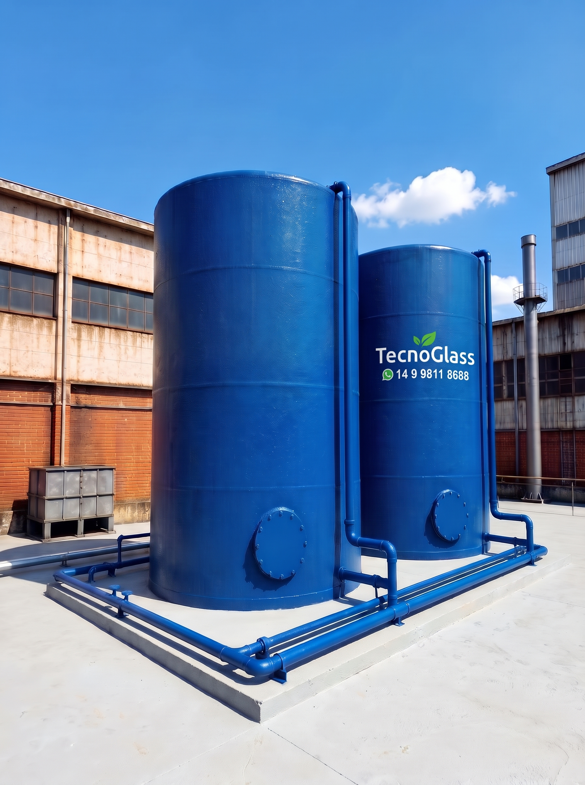
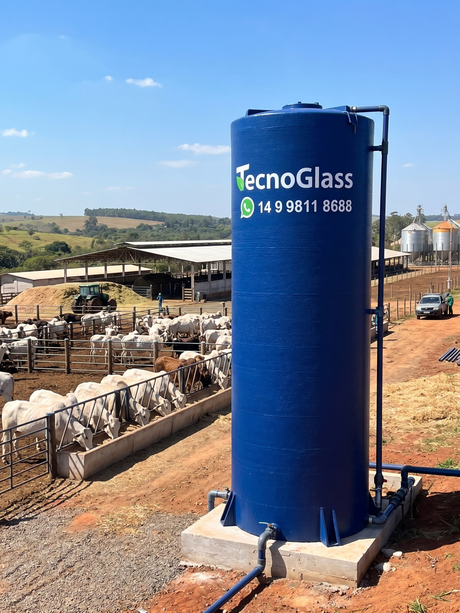

Fabricação · VendaReservatório
Novo
Fabricamos sob medida em PRFV: reservatórios, cisternas, caixas especiais e reatores para E.T.E e E.T.A. Fabricação própria, 100% nacional.
Ver Reservatórios
Fabricação · VendaFabricamos sob medida em PRFV: reservatórios, cisternas, caixas especiais e reatores para E.T.E e E.T.A. Fabricação própria, 100% nacional.
Ver Reservatórios
Consertos · Reformas · InstalaçãoVazamento, trinca ou flange danificado? Diagnosticamos e realizamos reparos em PRFV, muitas vezes sem a necessidade de substituir o equipamento inteiro. Nossos serviços são planejados para que os reparos possam ser realizados sem interromper o abastecimento de água do condomínio.
Pedir DiagnósticoDesenvolvemos sistemas de armazenamento e reparo em PRFV para operação segura em ambientes industriais, prediais e rurais exigentes.
*Conforme especificação técnica e condições de operação de cada projeto.
Estrutura reforçada para suportar as condições mais exigentes.
Materiais de alta qualidade que garantem longa vida útil.
Projetados para resistir ao sol, chuva, umidade e variações climáticas.
Superfície interna lisa que evita incrustações e facilita a limpeza.
Qualidade garantida em cada detalhe, do projeto à instalação.
Configurações fabricadas sob medida para máxima resistência estrutural, estanqueidade e vida útil em campo.

Armazenamento de água potável para prédios, condomínios, obras e áreas rurais.

Reserva de água potável e captação pluvial com fabricação adequada ao local.

Diagnóstico e reforço de tanques, flanges e tubulações — muitas vezes sem substituir o equipamento.

Cada setor exige uma decisão diferente de volume, instalação e manutenção. Por isso dimensionamos cada projeto para a realidade da operação.

Reatores anaeróbios, UASB, floculadores e decantadores para E.T.E e E.T.A, com 100% de estanqueidade e baixa manutenção.

Reserva predial confiável para água potável, com instalação e suporte técnico próprio.

Captação e reserva de água para operações rurais, com robustez e baixa manutenção.